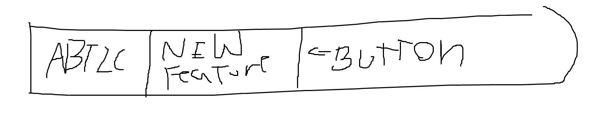
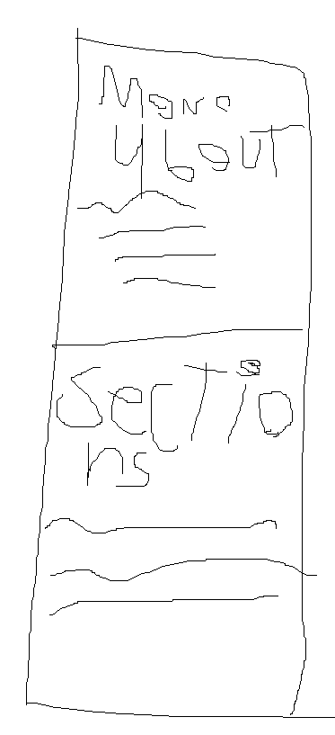

Hello There!
By Nahum :D
Hello there! I'm pretty sure you have some questions about this site so let me introduce you to this piece of my brain :D
Actuality
Well, as you can tell, I am not a web designer or something, I just had a really cool idea about this. A little blog about a teenager learning to code is a new project of mine, I wanna document all my journey to become a embedded systems engineer, I'll use some slang to make it casual, and yeah, it will be updated rarely, yk, it is not my main project.
As you can see, you have a side bar right on the left, this sidebar contains the last 10 articles I wrote (Just 2 for the moment) so if u wanna read more about my projects, wanna contact me or some other stuff, check that out!
One more thing I wanna explain to the two or three people that are gonna see this is the up bar. When there's a big realease (like a built-in minigame or a new feature) this bar will change and show only "ABTLC" and a big button with a direct link to the new feature.
Something like that (yeah, I'm that lazy), it will be like that for a little while, maybe a month or until I realease something else, I don't know, it depends on what is the new thing. For example, a new game (An official one) would last until a new project is realeased the same way as a built-in one would last for a few weeks or a month.
Future plans :D
I have some plans for the future, the first one is to rework the sidebar and you might ask "Why didn't you do it the right from the start?", fair question, but there's a problem, if I wanted to do it like that I'd have to do A LOT mor of work, I'd have to code some games, at least plan some projects and make a detailed article about each one. Why? Because I want to make some new hubs for each branch of the page, for example, a little space where you could find a list of all the projects I've made, since 2025 to my last day on earth; another little space where you could find all the built-in games; another one where you could find all InCGames stuf. So cool, right?
I love my examples. Anyways, as you can see, there's the same sidebar but it has two slices now, one for the recen articles and other for the various sections this site will have :D
I think that's all for today, I hope you read it in the moment I've written more articles than these 2. Enjoy the site and see you later :D
Nahum, 06/28/2025